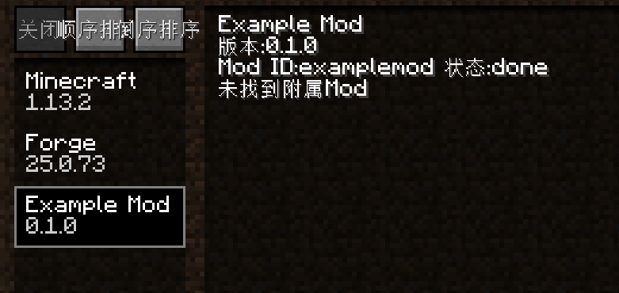

第一个mod
主类
新版的forge，@mod注解只需要写上一个内容——modid即可，我们有如下的代码:
package com.example.examplemod;
import net.minecraftforge.fml.common.Mod;
@Mod("examplemod")
public class ExampleMod
{
}
配置文件
新版的forge配置文件改为了toml格式，语法和之前不太一样，但是一个最基本的mod应该有以下内容:
modLoader="javafml"
loaderVersion="[25,)"
[[mods]]
modId="examplemod"
version="0.1.0"
displayName="Example Mod"
其中modId部分和@mod注解的需要一致，其他就是自己mod的情况。
效果
